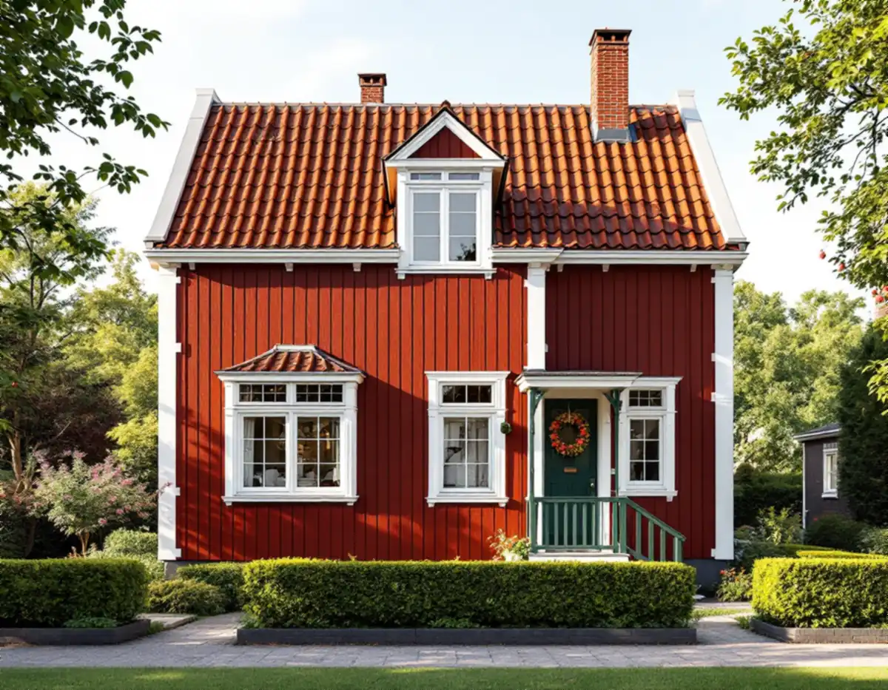
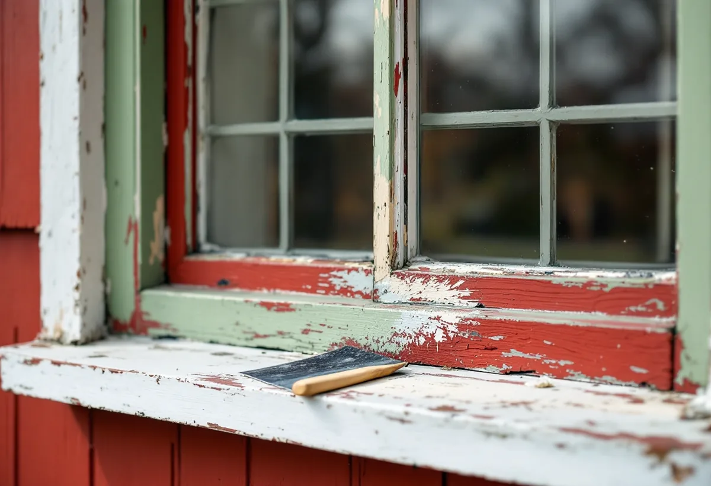

Platsbesök
Vi tittar på panel, foder, verandor och fönster och gör skrapprov där äldre färglager kan finnas kvar.
För Solhem i Spånga finns akvarellerade ritningar som visar vilka färger de första villorna var tänkta att ha, och de finns i dag hos Stadsmuseet. Geal Entreprenad AB målar fasader, fönster och interiörer i Solhem, Bromsten, Flysta, Sundby och övriga Spånga, med gratis platsbesök och skriftligt kostnadsförslag.

I en artikel på Stockholmskällan beskriver Jonas Ferenius och Lars Johannesson hur AB Hem på landet lämnade ritningar och fotografier från Duvbo och Solhem till Stadsmuseet. Bland dem finns en svit med 15 akvarellerade byggnadsritningar på kartong, alla till tomter som såldes senast i juli 1905.
Ritningarna visar enligt artikeln en helsvensk, nationalromantiskt präglad stil, och färgsättningen genomgående ett genomtänkt samspel mellan kulörer. Vanligast är rödfärgade fasader med vindskivor, knutar och fönsterfoder i vitt och entré och veranda i grönt. Några hus har ljus beige panel med bruna snickerier, och ett har grön fasad med snickerier i samma färg och fönsterbågar i brunt.
Våren 1904 ordnade bolaget en tävling om ritningar till egnahem, och de inlämnade skisserna ställdes ut i Lantbruksakademiens sal, där de väckte stort intresse. Bolagets ingenjör Gunnar Way-Matthiesen, en av pristagarna, skulle se till att husen följde bolagets bestämmelser om stugstil, tegeltak och tilltalande färg. Solhem skulle se bättre ut än de villasamhällen som beskrevs som fulla av hus i mot varandra skrikande färger.

Artikeln konstaterar att alla sju byggnader från ritningarna som finns kvar har förändrats. Panelen har bytts mot eternit, lackpanel eller kalksandsten och de tätspröjsade fönstren har bytts ut. Efterfrågan på tomter ledde till att många tomter styckades, och många av de äldre villorna förändrades kraftigt på 1960- och 70-talen.
För den som vill ge en Solhemsvilla tillbaka något av den ursprungliga karaktären är färgsättningen det enklaste steget. Stockholms stads vägledning för småhusområden råder att ta tillvara eller återskapa karaktärsskapande material, kulörer och detaljer så långt det går. Vi gör skrapprov under listverk och foder, där äldre lager kan finnas kvar, innan kulören bestäms.
Är panelen utbytt mot fasadskivor från 1960- eller 70-talet behöver vi veta vad de består av innan något tvättas eller slipas. Boverket listar fasadskivor bland byggprodukter som kan innehålla asbest och skriver att högtryckstvätt, stålborstning och slipning kan frigöra fibrer. Byte av panel hör hemma under fasadrenovering.
Vägledningen räknar Solhem, Bromsten, Flysta och Sundby till typen villastad, men av de fyra är bara Solhem markerat som kulturhistoriskt värdefull miljö. I de övriga tre handlar målningen därför mer om husets eget skick och ägarens val än om en gemensam färgskala.
Stadens områdesfakta för 2025 visar hur tydligt det här är villaområden med enskilda ägare. I Flysta är 657 av 663 småhus äganderätter och i Sundby 525 av 559. Det är alltså i regel ägaren själv som beställer fasadmålningen, inte en förening.
Inomhus målar vi väggar, tak, snickerier och dörrar och tapetserar. Ska köket göras om samtidigt finns mer under köksrenovering i Spånga, och för taket under takrenovering i Spånga.
Stockholms stad skriver att fasadändringar på en- och tvåbostadshus inte längre kräver bygglov om vissa förutsättningar är uppfyllda. Utökad lovplikt gäller om huset är markerat med blått eller grönt i Stadsmuseets klassificeringskarta eller ligger i ett område med grön eller blå ring. Streckade ytor är miljöer som ännu inte har inventerats, och även där kan lov behövas.
Är du osäker kan du mejla Stadsmuseet med adress, fastighetsbeteckning, stadsdel, byggnadsår, senare ombyggnader och foton av fasaderna. Museet brukar svara inom tre veckor från att det har fått alla uppgifter. Boverket påpekar att ommålning i samma kulör normalt är underhåll, medan ett byte av färgtyp kan räknas som en påverkan på husets karaktärsdrag.
Vi tittar på panel, foder, verandor och fönster och gör skrapprov där äldre färglager kan finnas kvar.
Stadsmuseets klassificering och detaljplanen kontrolleras innan kulören bestäms.
Färgtyp, kulörer för fasad och snickerier, förarbete och antal strykningar skrivs ut.
Tvätt, skrapning, lagning av trä och kittning av fönster. Häckar och rabatter skyddas.
Grundning och strykningar i lämpligt väder, snickerierna i egen kulör.
Vi går igenom resultatet tillsammans och bättrar där det behövs.
För en villa med äganderätt räknar Skatteverket fasadmålning och målning av golv, tak, väggar, fönster och element som rotarbete, men inte staket och murar. Avdraget är 30 procent av arbetskostnaden, högst 50 000 kr per person och år och högst 75 000 kr tillsammans med rutavdrag.
Material och resor ger inget avdrag. Geal drar avdraget direkt på fakturan.
Flera kulörer på samma hus, som röd fasad med vita foder och gröna dörrar, tar längre tid än en kulör rakt igenom, eftersom varje del målas för sig. Antalet verandor, fönster och listverk spelar in, liksom hur mycket lös färg som ska bort. Platsbesöket är gratis och du får ett skriftligt kostnadsförslag.
Fasad, fönster och invändig målning.
Målare i Stockholm →Takbyte, takbesiktning och plåtarbeten.
Takläggare i Spånga →Solhem, Bromsten, Flysta och Sundby.
Takrenovering i Spånga →Solhem, spåren och de stora tomterna.
Attefallshus i Spånga →Äldre villor, duschplats och bostadsanpassning.
Badrumsrenovering i Spånga →Riva och bygga nytt hus.
Byggföretag i Spånga →Bättra eller måla om hela villan.
Fasadmålning i Spånga →Trävillor och gruppbyggda radhus.
Fasadrenovering i Spånga →Villor, verandor och nya öppningar.
Fönsterbyte i Spånga →Villorna i Solhem.
Fönsterrenovering i Spånga →Massivt, lamell, fanér eller laminat.
Golvläggare i Spånga →Breda originalgolv och patina.
Golvslipning i Spånga →Solhem, villastäder och kök i flera lager.
Köksrenovering i Spånga →Villatak, rännor och stuprör.
Plåtslagare i Spånga →Väggar, vindar och verandor i villastäderna.
Snickare i Spånga →Solceller, radarn och Solhem.
Takbyte i Spånga →Tapet som passar husets tid.
Tapetsering i Spånga →Villastäderna, tomterna och gatan.
Tillbyggnad i Spånga →Villastäderna, stommen och ventilationen.
Totalrenovering i Spånga →